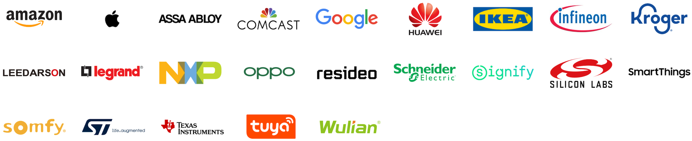

Matter
Devendra Tewari
November 25, 2021
Matter
Objective
- Why Matter?
- When will it be available?
- How to use it today?
Why Matter?
- Why smart home?
- Limited smart home potential without interoperable devices
- Matter is driven by industry leading device manufacturers
- Matter implementation is open source and free of royalties
- Matter weaves together existing standards and fills in the blanks
Internet Protocols

When will it be available?
Devices that support Matter pushed to sometime in 2022
Preliminary support available on Android 12 and iOS 15
Wide adoption is expected
 Alliance Members
How to use it today?
- Start by reading the docs at https://github.com/project-chip/connectedhomeip
- Try it out in Linux on a Raspberry Pi
- Try it out on an embedded device such as ESP32
Core concepts
| Matter | HomeKit | Zigbee |
|---|---|---|
| Attribute | Characteristic | Attribute |
| Binding | Event subscription | Binding |
| Cluster | Services | Cluster |
| Commissioning / Rendezvous | Pairing | Association |
| Controller / Commissioner | Admin | Coordinator |
| Device or Node | Accessory | Device or Node |
| Endpoint | Profile | Endpoint |
| Fabric | Network | Network |
Architecture

Code Repository
BUILD.gn
CONTRIBUTING.md
build
build_overrides
docs
examples
all-clusters-app
all-clusters-common
esp32
linux
bridge-app
chip-tool
common
platform
esp32
linux
integrationsscripts
activate.sh -> bootstrap.sh
bootstrap.sh
src
include
lib
platform
ESP32
Linux
protocols
system
tools
chip-cert
transport
third_party
pigweed
zap
zzz_generatedSupported development platforms
- Embedded
- ESP32
- FreeRTOS
- Linux
- mbed
- nrfconnect
- nxp
- Tizen
- Zephyr
- Mobile
- Android
- iOS
- Desktop
- Linux
- macOS
- Windows
Linux Device Firmware Development
Build and test on a Raspberry Pi 4
Install toolchain
Build and run all-clusters-app
git clone --recurse-submodules \ https://github.com/project-chip/connectedhomeip cd connectedhomeip unalias python source ./scripts/bootstrap.sh source ./scripts/activate.sh cd examples/all-clusters-app/linux gn gen out/debug ninja -C out/debug # Delete network ./out/debug/chip-all-clusters-app --wifi
ESP32 Device Firmware Development
Build on macOS and test on M5STACK Core 2
Install ESP-IDF
Build and run all-clusters-app example on device
chip-tool
Command line tool to commission and interact with devices
Commissioning
Configures device into a Matter fabric
Pair device with multiple controllers
Commissioning over BLE/Wi-Fi using
chip-tool
Commissioning on Android 12

Commissioning on iOS
- Open the Home app and tap Add Accessory or Add
- Tap Add Accessory
- Use the camera on your iPhone, iPad, or iPod touch to scan the QR code on the accessory or accessory documentation
- When your accessory appears, tap it. If asked to Add Accessory to Network, tap Allow.
- Name your accessory and assign it to a room to help you identify it in the Home app and control it with Siri
- Tap Next, then tap Done.

Read attributes using chip-tool
chip-tool onoff read on-off 1 1
chip-tool pressuremeasurement read measured-value 1 1
chip-tool relativehumiditymeasurement read measured-value 1 1
chip-tool temperaturemeasurement read measured-value 1 1CHIP: [DMG] }
CHIP: [DMG]
CHIP: [DMG] Data = -32768,
CHIP: [DMG] DataVersion = 0x0,
CHIP: [DMG] },Write attributes using chip-tool
CHIP: [DMG] }
CHIP: [DMG]
CHIP: [DMG] Data = 5,
CHIP: [DMG] DataVersion = 0x0,
CHIP: [DMG] },Send commands using chip-tool
CHIP: [DMG] }
CHIP: [DMG]
CHIP: [DMG] Data = true,
CHIP: [DMG] DataVersion = 0x0,
CHIP: [DMG] },View device configuration using ZAP Tool
Endpoints are defined (along with the clusters and attributes they contain) in a
.zapfile which then generates code and static structures to define the endpointsRun Zigbee Cluster Configurator
Open
examples/all-clusters-app/all-clusters-common/all-clusters-app.zapData definition specified in Zigbee Cluster Library Specification
Contributing to Matter
Read CONTRIBUTING.md
Submit bugs and features to https://github.com/project-chip/connectedhomeip/issues
Change code
Run automated test suite on host using act e.g.
Run test on device using chip-tool
Submit pull request via GitHub for maintainers to review and merge